Everything you need on your very first day: your invitation, signing in, and finding your way around.
01
Accept your invitation and choose a password
EveryoneAbout 2 min
When a founder adds you, KalamDesk emails you a Welcome to KalamDesk message. The link in it works once and expires after 3 days.
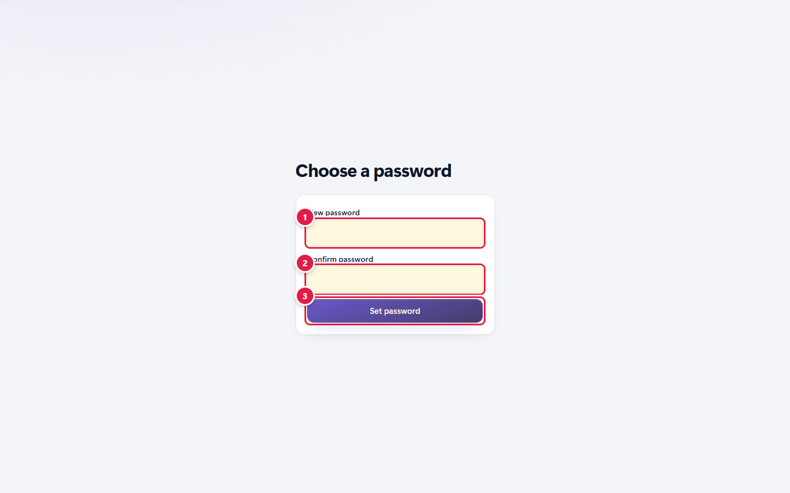
New password. Choose at least 8 characters. A short sentence you will remember is better than a clever word, for example blue-chai-at-6pm.
Confirm password. Type the same password again so a typo cannot lock you out.
Set password. Click it. You then see a Sign in button, which takes you to the sign-in page.
02
Sign in on any day
EveryoneAbout 1 min
Open the KalamDesk address your company gave you in any browser, on a laptop or a phone. Bookmark it, or add it to your phone's home screen.
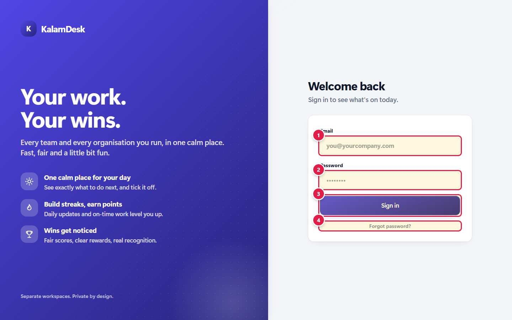
Email. Use your official company email, the same one the invitation was sent to.
Password. The one you chose. If you turned on two-step sign-in, you will be asked for a 6-digit code on the next screen.
Sign in. Click it, or press Enter on your keyboard.
Forgot password? Click it, type your email, and we send a link to choose a new one. It works once and lasts 1 hour.
03
Read and accept the privacy notice
EveryoneAbout 1 min
The first time you sign in, a short notice appears. It tells you what KalamDesk stores about you and why.
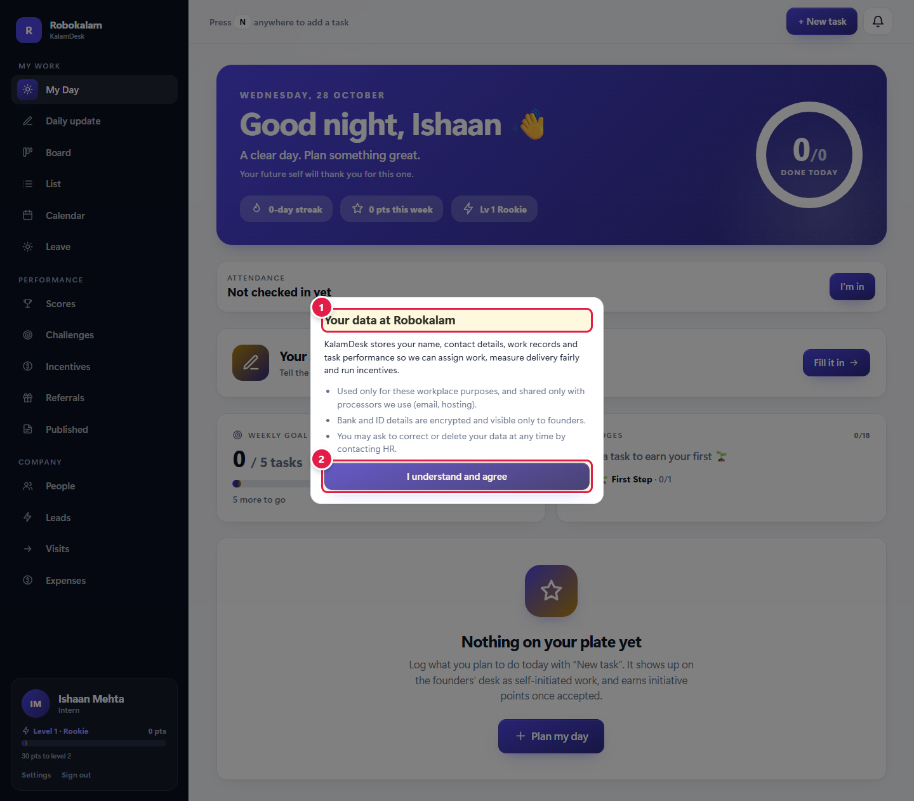
The notice. We keep your name, contact details, work records and task performance only to assign work, measure delivery fairly and run incentives. Bank and ID details are encrypted and only founders can open them.
I understand and agree. Click it to continue. You cannot use the app until you do.
04
Your first day: what you will see
EveryoneAbout 3 min
A brand-new account is quiet, and that is normal. This is My Day, your home screen. It fills up as soon as you are given work.
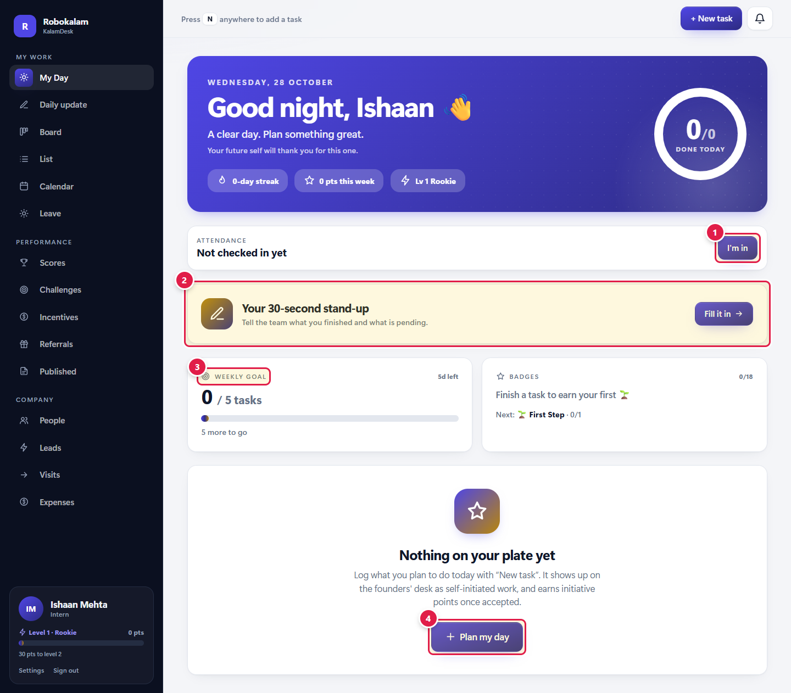
I'm in. Tap this when you start work. It records your attendance for the day. Tap I'm out when you finish.
Your 30-second stand-up. Click Fill it in to tell the team what you finished and what is pending. Do this every working day.
Weekly goal. A gentle target of how many tasks to finish this week. The bar fills as you finish work.
Plan my day. Nothing assigned yet? Add your own tasks here. Self-started work shows up on the founders' desk and earns bonus points once accepted.
05
Find your way around: the left menu
EveryoneAbout 3 min
The dark menu on the left is on every screen (on a phone it is the bar along the bottom, which scrolls sideways). It has three groups.
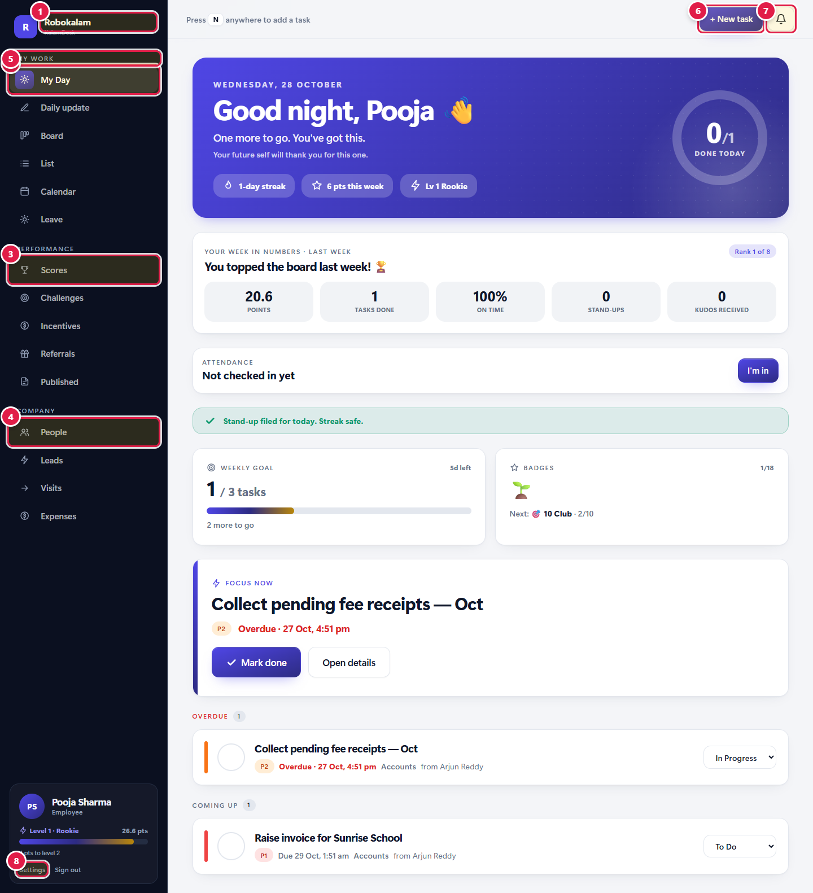
Your organisation at the top. If you work for more than one organisation and have been given access, click it to switch.
My Day. Your home screen: what is due, what is overdue, and what to do next.
Scores. The leaderboard: points this week, this month and all time.
People. A names-only directory: your colleagues' names, roles and departments. Contact details are visible to managers and founders only, and you only ever see people in your own organisation.
Group headings. *My work*, *Performance* and *Company* group everything. Items you cannot use are simply not shown to you.
+ New task. Add a task from any screen. Tip: press N anywhere on your keyboard.
The bell. Your notifications: tasks assigned to you, comments, kudos and reminders. A red dot means something is new.
Settings and Sign out. Bottom left. Your level, points and a progress bar to the next level are shown just above.
Part 2
Your working day
The routine that keeps you, your manager and your scores on track.
06
My Day: your home screen
EveryoneAbout 3 min
Open My Day first thing every morning. Everything due today, and anything overdue, is here.
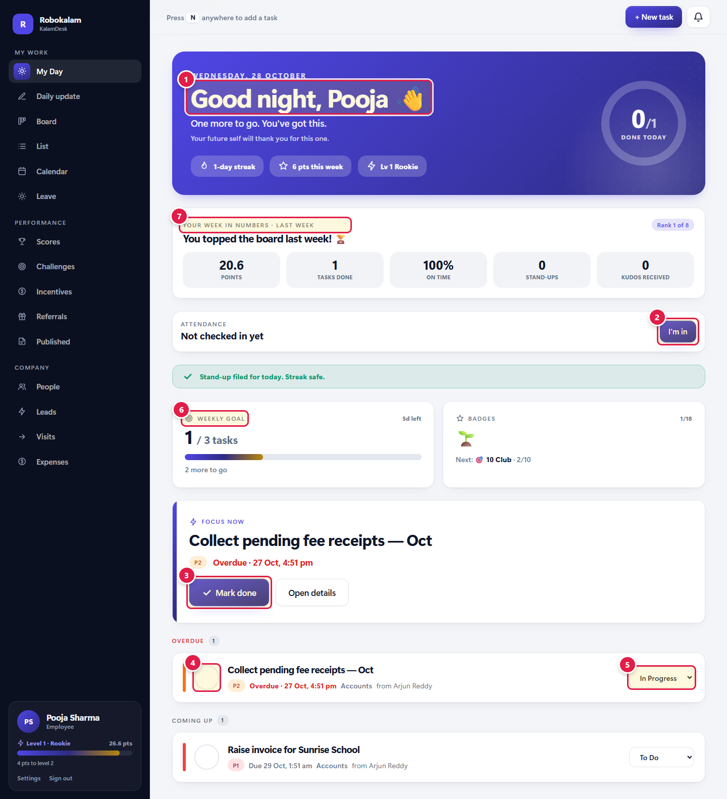
The greeting banner. Shows your streak (days in a row you filed a stand-up), points this week and your level. The ring shows tasks done today.
I'm in / I'm out. Records your attendance. It is a single tap.
Focus now. The one task to do next. Mark done finishes it. Open details shows the full task.
The round tick. The quick way to finish any task in your list.
The status menu. Change a task between To Do, In Progress, Blocked, In Review and Done without opening it.
Weekly goal. How many tasks you have finished against this week's goal.
Your week in numbers. Last week's points, tasks done, on-time rate, stand-ups and kudos, and your rank among your peers.
07
Add a task in ten seconds
EveryoneAbout 2 min
Click + New task, or press N anywhere. Type naturally; KalamDesk reads it for you.
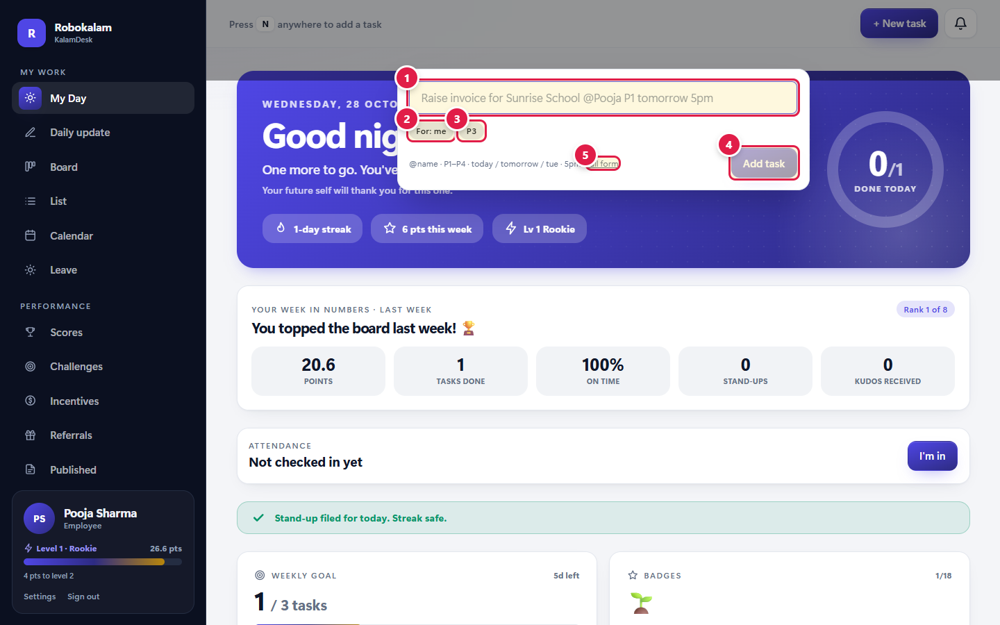
Type the task in plain words. Example: Raise invoice for Sunrise School @Pooja P1 tomorrow 5pm. It understands @name for who, P1 to P4 for priority, and words like today, tomorrow, tue or 5pm for the deadline.
For: me. Shows who the task is for. Employees and interns can add tasks for themselves. Asking someone else to do something sends them a *request* they can see.
Priority. P1 is urgent, P2 high, P3 normal, P4 when free. P3 is the default.
Add task. Saves it, or press Enter.
Full form. Want a description, checklist, location or exact date? Open the full form instead.
08
Open a task: status, checklist, files and comments
EveryoneAbout 4 min
Click any task title to open it. This is where the work gets done and recorded.
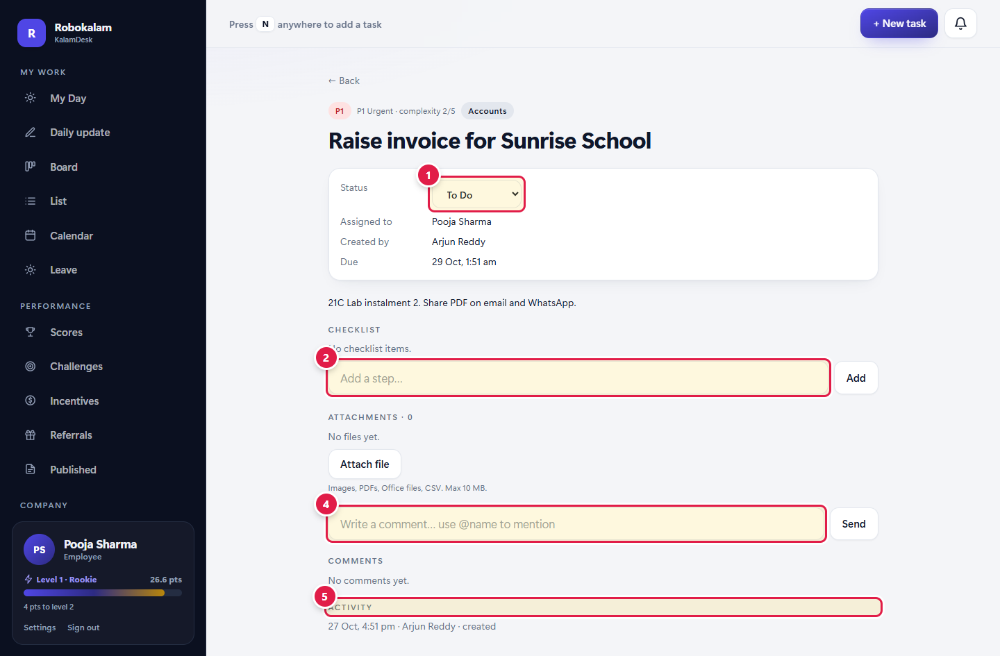
Status. To Do, In Progress, Blocked, In Review or Done. Moving to Blocked asks for a reason, and the person who assigned it is told straight away.
Add a step. Break the task into a checklist. Tick steps off as you go.
Attach file. Photos, PDFs, Office files and CSV, up to 10 MB each.
Comment box. Ask questions or give updates. Type @name to mention a colleague and they are notified.
Activity. An automatic history of who changed what and when. It cannot be edited.
09
File your daily stand-up
EveryoneAbout 2 min
Every working day, spend two minutes here. It keeps your streak alive, and it means your manager never has to chase you for a status.
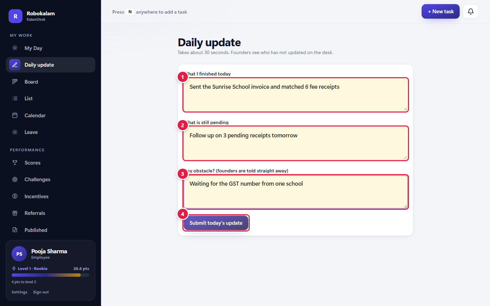
What did you finish today? Short and specific beats long: 20 calls, 2 school visits, invoice for Sunrise School.
What is pending? What you will pick up tomorrow.
Any obstacles? Anything slowing you down. Founders see these, and it is the fastest way to get help.
Save. The button reads Update again if you have already filed today, and you can edit as often as you like until midnight.
10
Board, List and Calendar: three ways to see your work
EveryoneAbout 4 min
Board shows tasks as cards in columns. Drag a card to another column to change its status.
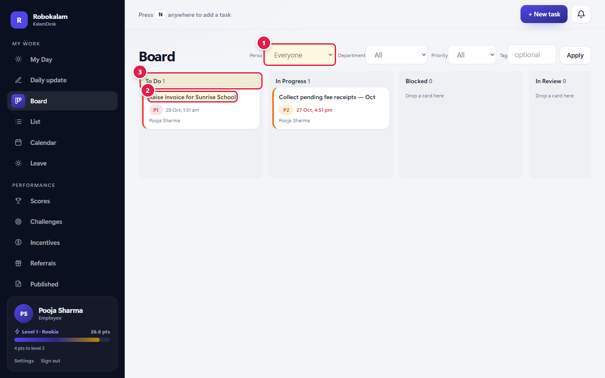
Filters. Narrow by priority or tag. Employees and interns see only their own work. Managers and founders also get Person and Department filters, to see their team or everyone.
A task card. Click it to open the task. The coloured edge shows priority.
To Do column. Work that has not started.
Done column. Finished work. Drop a card here to finish it.
11
List: sort and filter every task
EveryoneAbout 2 min
List shows the same tasks as a sortable table. It is the best view for searching and for bulk work.
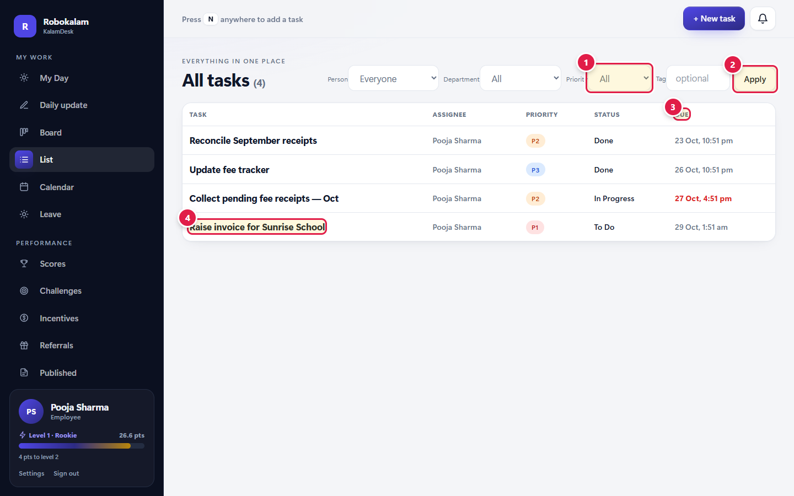
Priority filter. Also filter by tag, then click Apply. (Managers and founders can filter by person and department too.)
Apply. Run your filters.
Column headings. Click TASK, PRIORITY, STATUS or DUE to sort.
A row. Click to open the task.
12
Calendar: deadlines by date
EveryoneAbout 1 min
See every deadline laid out across the month.
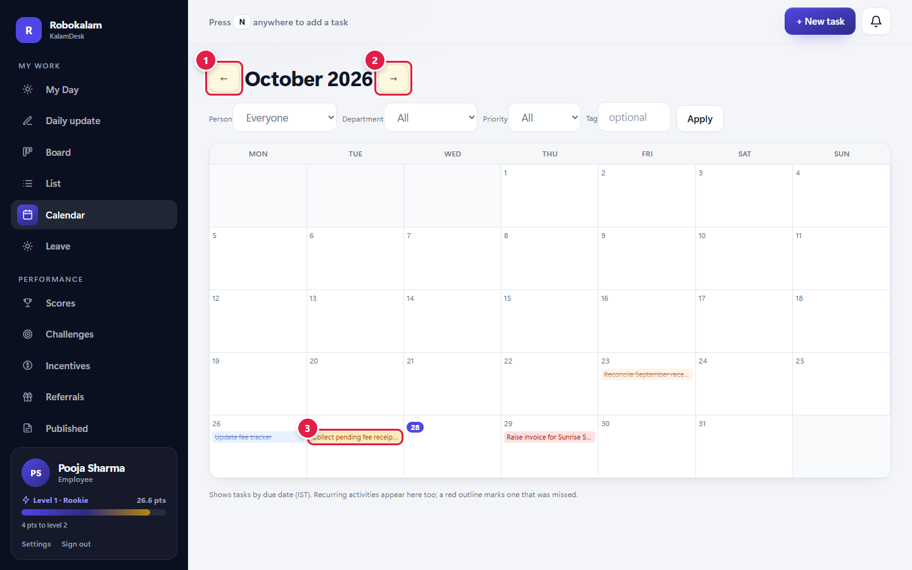
Previous month.
Next month.
A task. Click to open it. Overdue tasks are shown in red.
13
Notifications: the bell
EveryoneAbout 1 min
KalamDesk tells you when something needs you: a new task, a comment, a task sent back, a deadline in 2 hours, or kudos from a colleague.
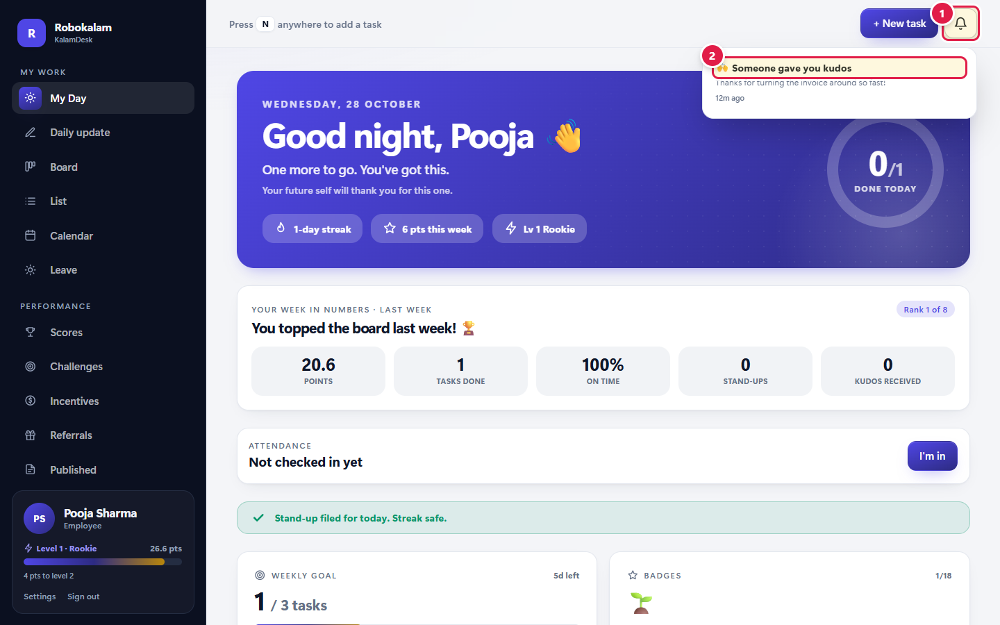
The bell. A red dot means something is new. Click to open the list.
A notification. Click it to jump straight to the task or page. It is then marked as read.
Part 3
Leave, visits, leads and expenses
The everyday business tools. Use them instead of messages and spreadsheets, so everything lives in one place.
14
Ask for leave and mark attendance
EveryoneAbout 3 min
Open Leave from the menu. Your manager and the founders are told as soon as you ask.
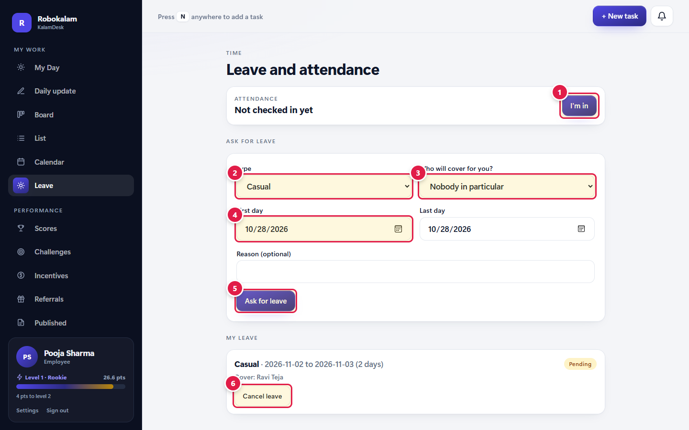
I'm in / I'm out. Your daily attendance. Tap I'm in when you start and I'm out when you finish.
Type of leave. Casual, Sick, Unpaid or Other.
Cover person. Choose a colleague to cover for you. New tasks given to you while you are away are shared with them, so nothing sits idle.
Dates. Choose the first and last day. Leave is counted in calendar days.
Ask for leave. Sends the request. You will be notified when it is approved or declined.
Cancel leave. Changed your plans? Cancel a pending or approved request here.
15
Record a school visit
EveryoneAbout 3 min
For field work such as school visits, open the visit task right after you finish. Two minutes now saves a long phone call later.
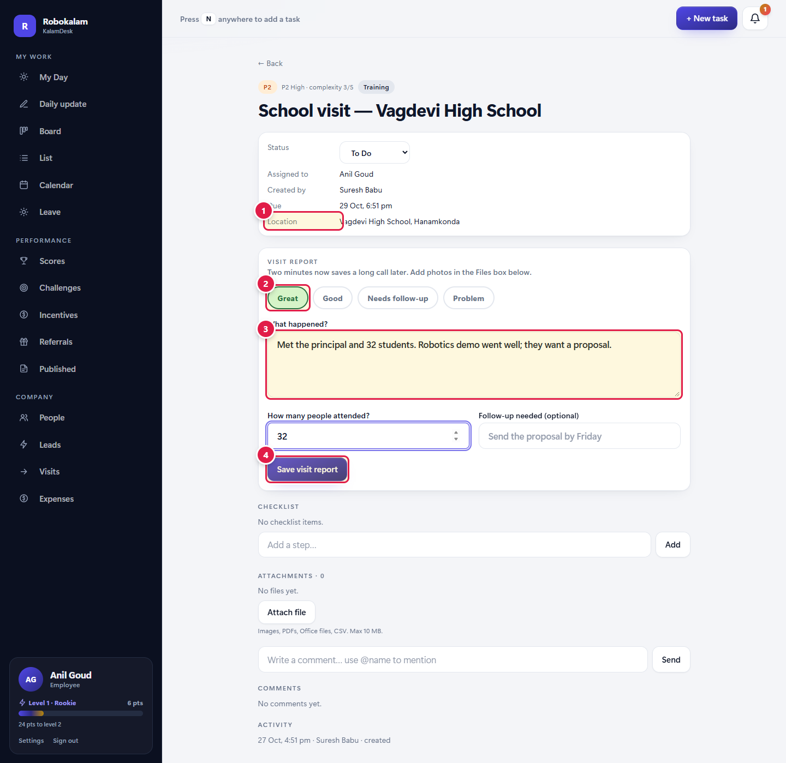
Location. The place from the task. Tap it to open the address in Google Maps.
How did it go? Great, Good, Needs follow-up or Problem. A Problem alerts the founders immediately.
What happened? Who you met, what you showed, how students reacted.
Save visit report. You can come back and edit it.
16
Track your leads
EveryoneAbout 4 min
Leads is your list of schools and contacts you are working to win. Log every call so nothing is forgotten.
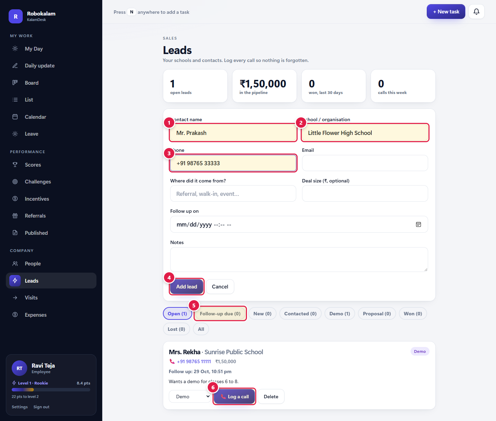
Contact name. Who you spoke to. Only name and, usually, the school are required.
School or organisation.
Phone (and email, deal size and source are optional). Tap a phone number later to call.
Add lead. Saves it as a *New* lead.
Filters. *Follow-up due* shows who you promised to call back today.
Log a call. Record the outcome (connected, no answer, call back, not interested, wrong number) and set a follow-up date.
17
Claim an expense
EveryoneAbout 3 min
Spent your own money on work? Claim it here and attach the receipt.
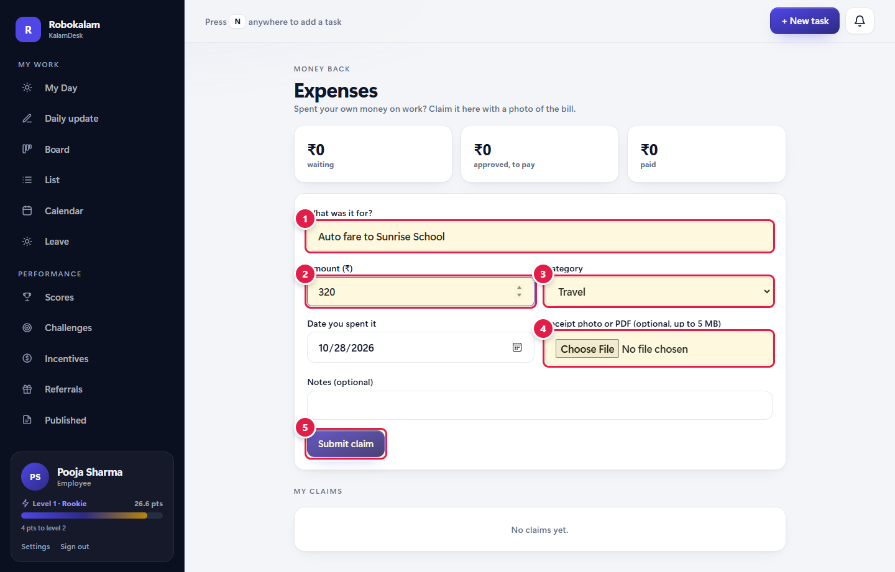
What was it for? For example Auto fare to a school visit.
Amount (₹). Whole rupees.
Category. Travel, Fuel, Food, Stationery or Other.
Receipt. A photo or PDF up to 5 MB. Take the photo while you still have the paper.
Submit claim. A founder is notified. You can withdraw a claim until it is decided.
Part 4
Scores, rewards and recognition
How good work is measured, celebrated and rewarded.
18
Scores: the leaderboard
EveryoneAbout 3 min
Points reward finishing work, finishing it on time, and doing harder work. Employees and interns are ranked separately, so it is a fair comparison.
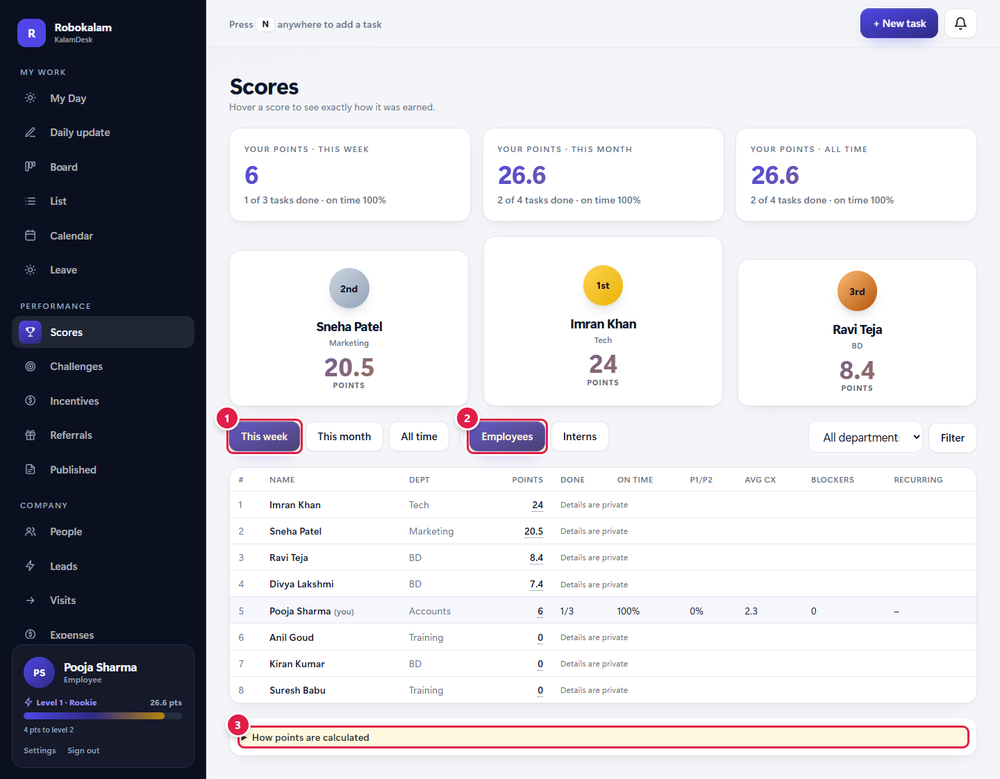
Time range. This week, this month or all time.
Employees or Interns. Choose which group to see.
How points are calculated. Open this for the exact formula. Hover any score to see how it was worked out.
19
Challenges, badges, streaks and kudos
EveryoneAbout 3 min
The fun part. It is there to make good habits visible.
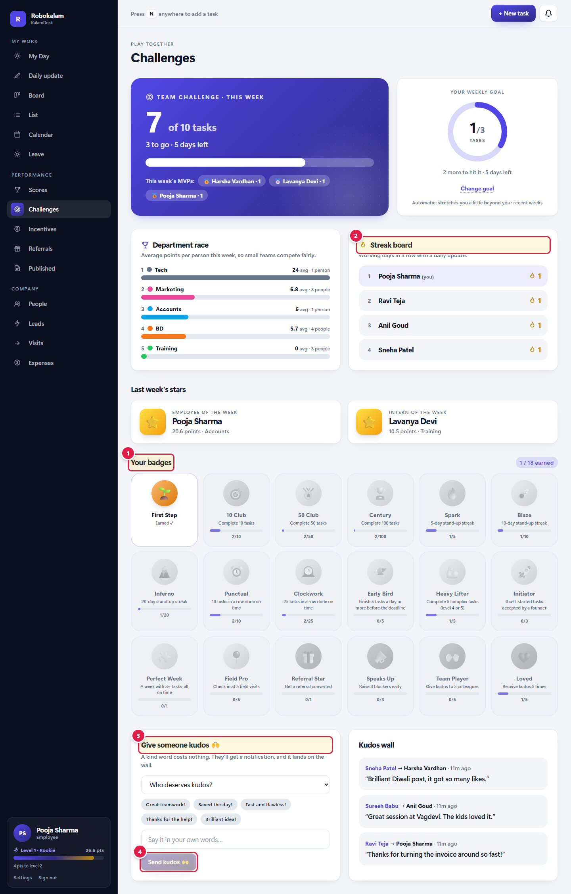
Your badges. Earned for milestones such as your first task, a 10-task club, and streaks. Locked badges show what to aim for next.
Streak board. Who has filed stand-ups the most days in a row.
Give someone kudos. Pick a colleague and a quick message, such as *Saved the day!*, or write your own.
Send kudos. They get a notification, and it appears on the Kudos wall.
20
Incentives: what you can earn
EveryoneAbout 2 min
Incentives are cash rewards for consistent, on-time work. Founders approve every payment.
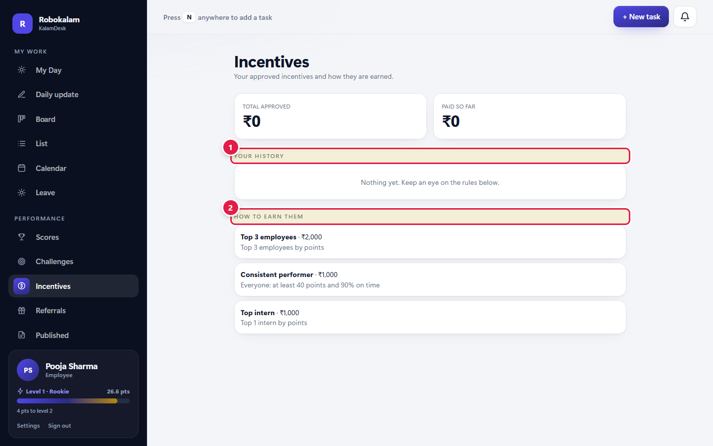
Your history. Every award you have received or are waiting on, by month.
How to earn them. The current rules, for example *at least 40 points and 90% on time in a month*.
21
Referrals: bring someone in
EveryoneAbout 2 min
Know a school, a franchise partner or a candidate we should talk to? Refer them and earn the reward.
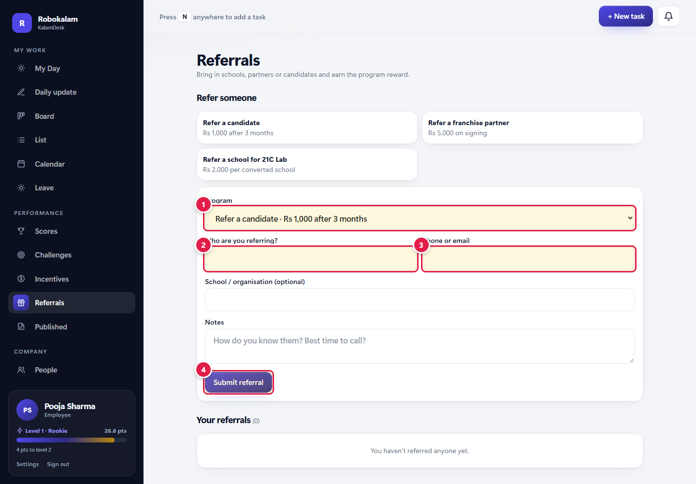
Programme. Pick what you are referring. The reward is shown next to it.
Their name.
Contact. A phone number or email.
Submit referral. A founder follows up. When it converts, the reward is added to your incentives.
Part 5
Settings and security
Your account, your privacy and how KalamDesk reaches you.
22
Install KalamDesk on your phone
EveryoneAbout 2 min
KalamDesk works as an app. Once installed, it opens from your home screen in one tap, full screen, with no browser bar, and the icon shows a red number when you have unread notifications.
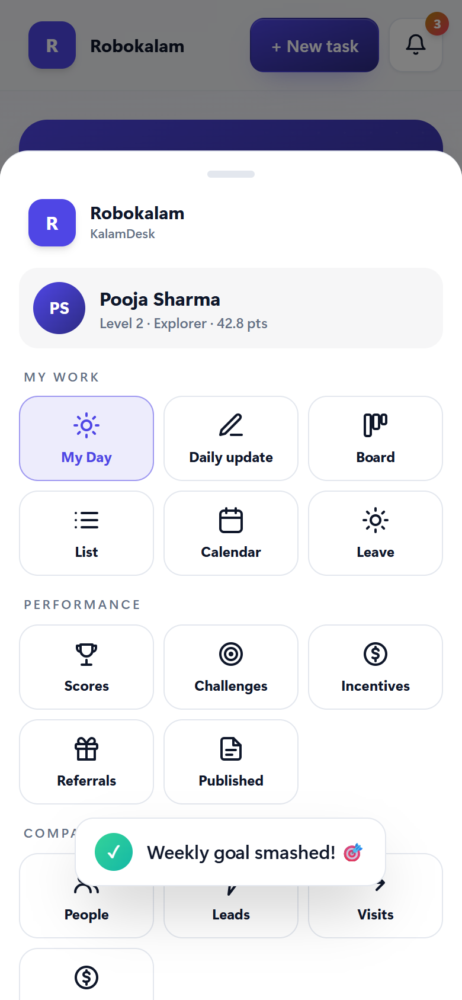
23
Settings: your account in one page
EveryoneAbout 4 min
Click Settings at the bottom of the left menu.
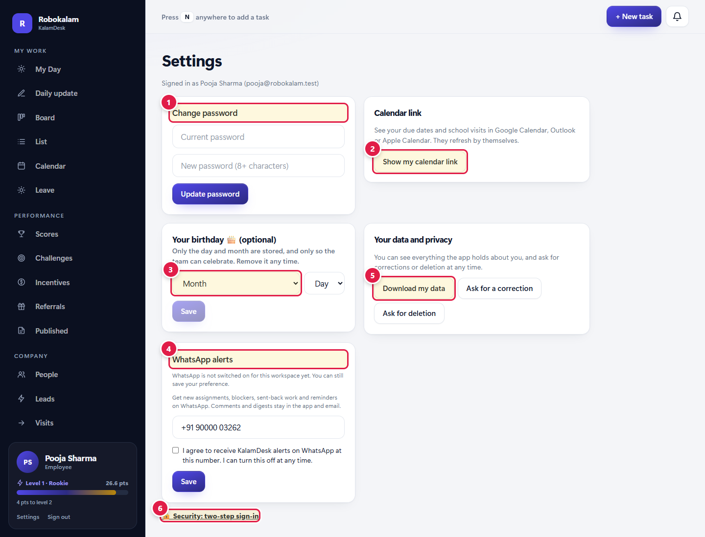
Change password. Enter your current password and a new one (8+ characters).
Calendar link. Click Show my calendar link and paste the private address into Google, Apple or Outlook calendar. Your deadlines then show up there. Keep the link private.
Birthday. Optional. Choose a day and month (never a year) and your team can cheer your day.
WhatsApp alerts. Enter your mobile number and tick the box to get alerts on WhatsApp. We never send a message without your tick.
Download my data. Everything we hold about you in one file.
Security. Turn on two-step sign-in (next page).
24
Two-step sign-in (strongly recommended for founders)
EveryoneAbout 5 min
Two-step sign-in asks for a 6-digit code from your phone as well as your password. Founders can open bank details, so founders should turn this on today.
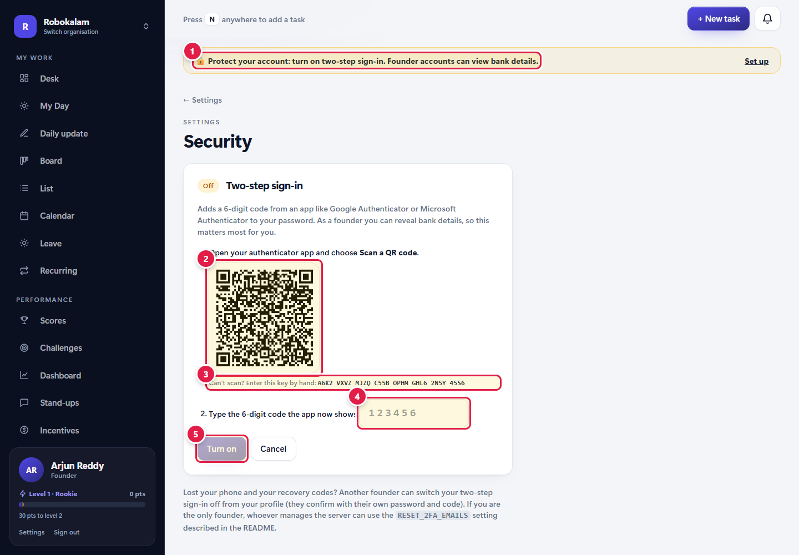
Set up. From Settings → Security click Set up two-step sign-in.
Scan the QR code. In Google Authenticator or Microsoft Authenticator, choose *Scan a QR code*.
Cannot scan? Type the long key shown here into the app by hand.
Type the 6-digit code the app shows now.
Turn on. You are then shown 8 recovery codes. Save them somewhere safe (a password manager or paper). Each works once if you lose your phone.
Part 6
For managers and founders
Running a team: assign, watch, approve and reward. Employees and interns do not see these screens.
25
The Founder's Desk: your whole team at a glance
Managers & foundersAbout 4 min
Open Desk every morning. Managers see their own team. Founders see everybody in the organisation.
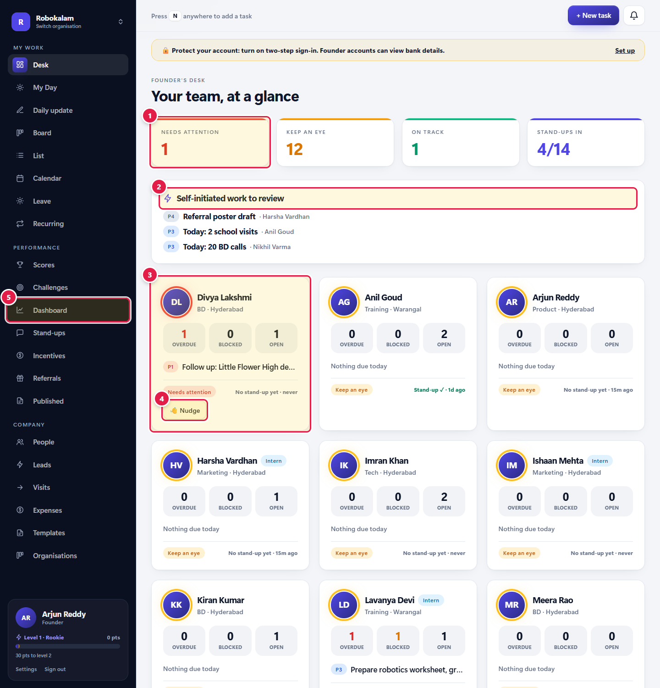
Health tiles. *Needs attention*, *Keep an eye*, *On track*, and how many stand-ups are in today.
Self-initiated work to review. Tasks people started themselves. Open one to accept it (which earns the person a bonus) or leave it.
A person's card. Overdue, blocked and open counts, today's top task, and when they last filed a stand-up. Click the name for their full page.
Nudge. One friendly reminder to that person, at most once per day. It arrives as a notification, email and WhatsApp if on.
Dashboard and the rest of the menu. Leads see extra items: Desk, Recurring, Dashboard, Stand-ups and Templates.
26
People: your directory
Managers & foundersAbout 2 min
People lists everyone in your organisation, grouped by role.
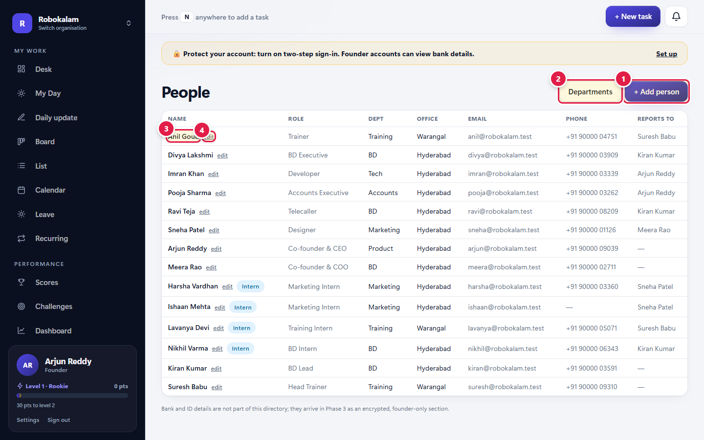
+ Add person. Founders only. Starts the onboarding below.
Departments. Founders only. Create and rename teams.
A person. Click the name to see their open tasks and recent activity.
edit. Founders only. Change a role, department, manager, or deactivate the account.
27
Add a new employee or intern
FoundersAbout 4 min
Founders only. This is the first step of onboarding. KalamDesk emails the person an invitation to choose their own password. You never see or set it.
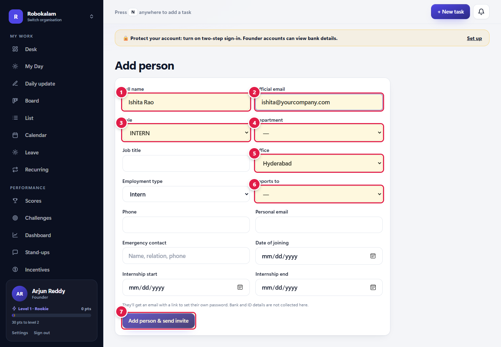
Name. As they should appear to the team.
Email. Their official company email. An email can belong to only one organisation.
Role. *Intern* and *Employee* work on their own tasks. *Manager* leads a team. *Founder* sees everything in the organisation, including bank details.
Department. Their team. Create more under *Departments*.
Office. Hyderabad, Warangal, Remote or Other.
Reports to. Their manager. This decides who approves their leave and sees their work.
Add person and send invite. They receive the email immediately. Resend it any time from their profile if it is lost.
28
A person's page
Managers & foundersAbout 2 min
Click anyone's name for a quick view of how they are doing.
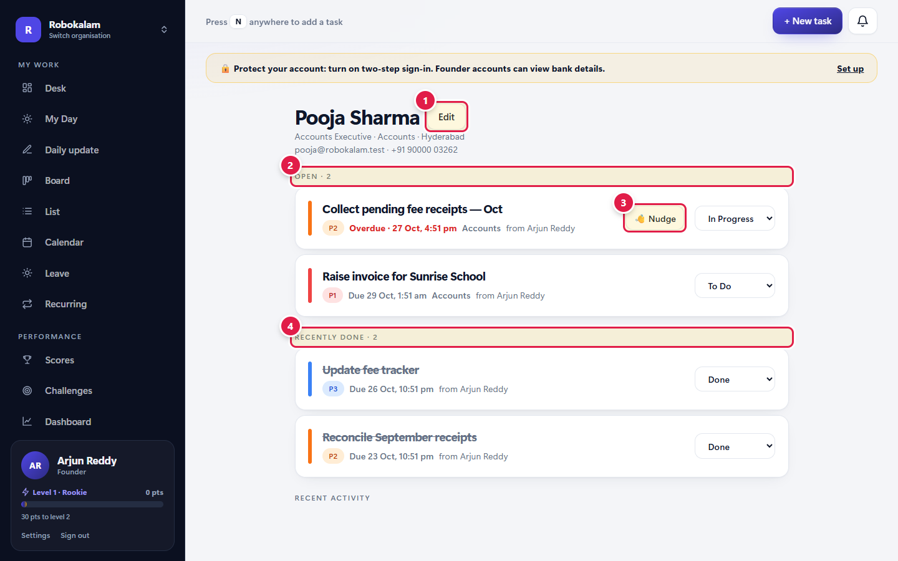
Edit. Founders can change details, role or reporting manager.
Open tasks. Everything on their plate, with deadlines and status. You can change a status from here.
Nudge. A friendly reminder on a single task.
Recently done. What they finished lately.
29
Departments
FoundersAbout 2 min
Departments are the teams in your organisation. Each organisation has its own set.
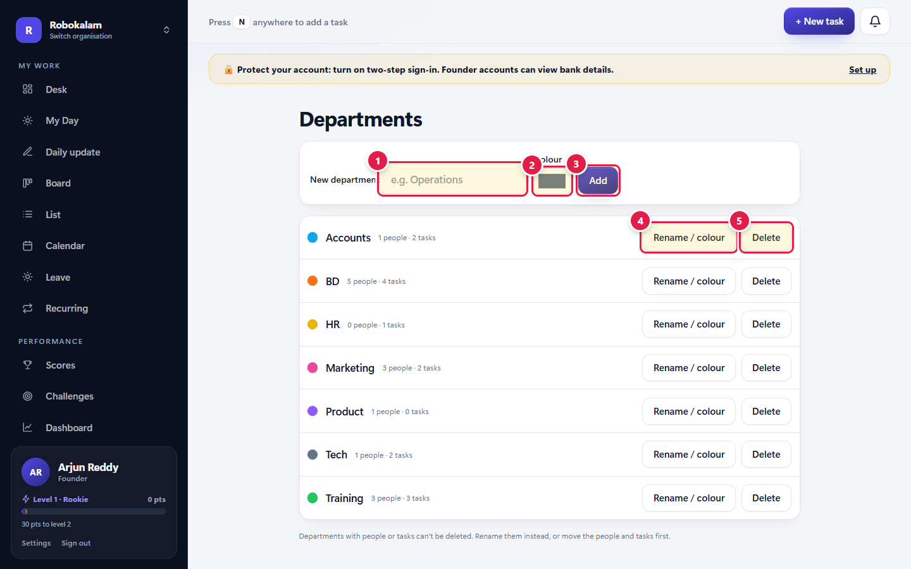
Name.
Colour. Shown on tags and charts.
Add.
Rename / colour.
Delete. Only possible when nobody and no task uses it.
30
Recurring activities
Managers & foundersAbout 4 min
Anything that repeats: weekly school visits, Monday reports, month-start invoicing. KalamDesk creates each task for you at the right time.
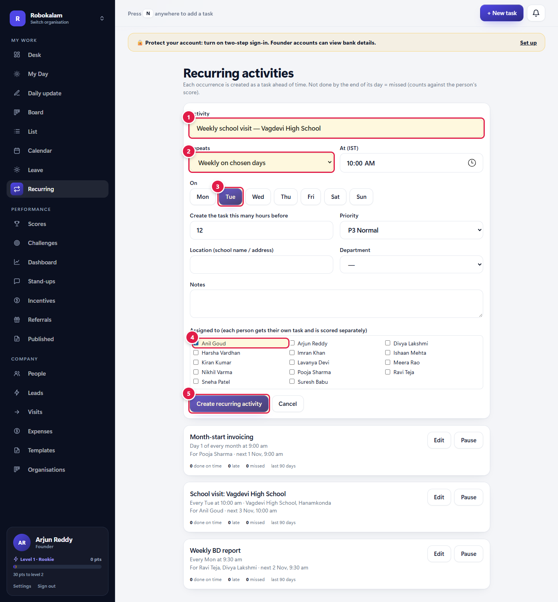
Activity. The task title that will repeat.
Repeats. Weekly on chosen days, every weekday, or monthly.
Days. Choose which days of the week.
Assigned to. Tick everyone responsible. Each person gets their own task and is scored separately.
Create recurring activity. Saves the rule. You can pause or edit it later.
31
Templates: saved task shapes
Managers & foundersAbout 2 min
Make a template for work you create again and again, such as a school visit with its checklist.
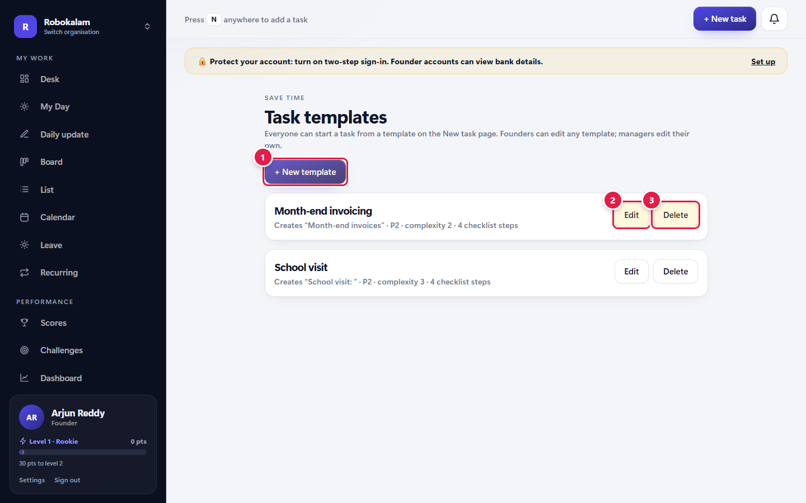
+ New template. Give it a name, title, priority and checklist.
Edit.
Delete.
32
Dashboard: numbers for the week or month
Managers & foundersAbout 3 min
See how the team is performing, then share or export it.
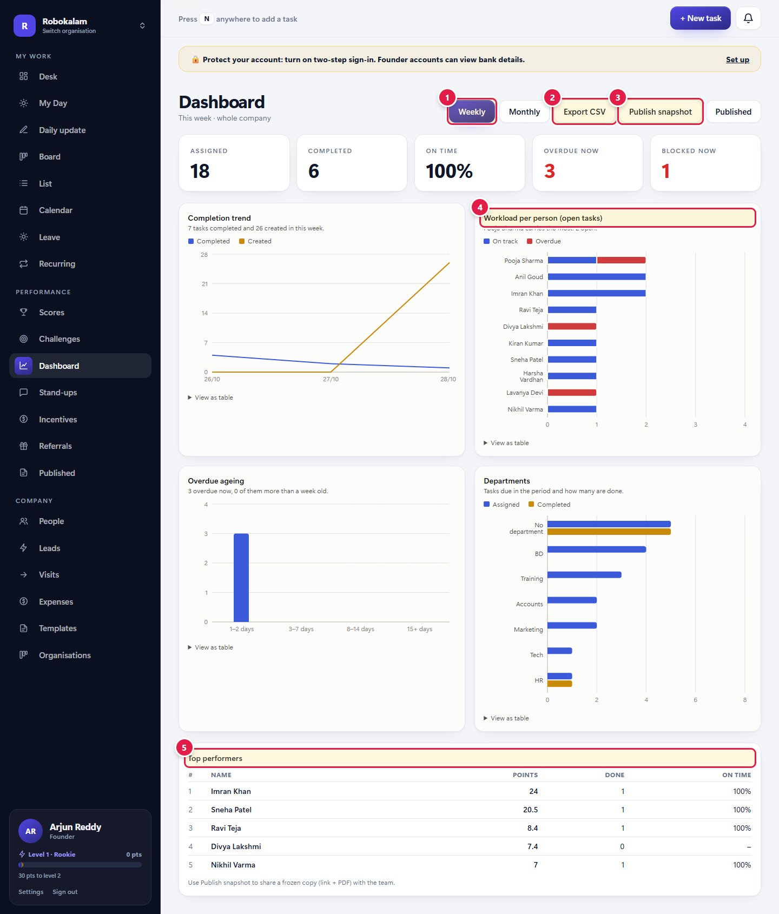
Weekly or Monthly.
Export CSV. For a spreadsheet.
Publish snapshot. Saves a read-only copy with a private link you can share, or download as PDF.
Workload per person. Open tasks for each person. Uneven bars mean uneven work.
Top performers. The current leaders.
33
Stand-ups: who has filed
Managers & foundersAbout 1 min
One page with everyone's daily update, newest first. Obstacles are highlighted so you can help.
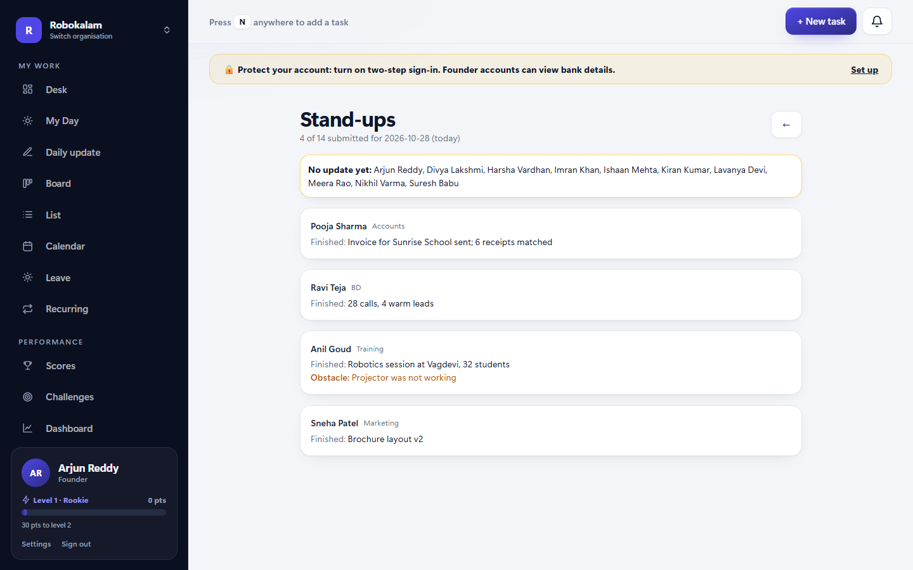
34
Approve expense claims
FoundersAbout 2 min
Founders approve every expense. Claims waiting for you appear at the top.
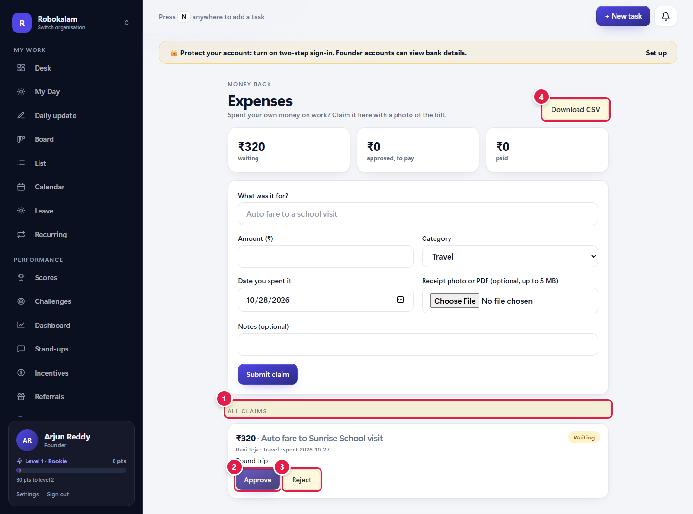
All claims. Open the receipt by clicking it.
Approve. Then, once you have paid, click Mark paid.
Reject. You must give a reason. The employee sees it.
Download CSV. Send it to your accountant.
35
Approve leave
Managers & foundersAbout 2 min
Open Leave. Requests from your team are listed under *Waiting for your decision*.
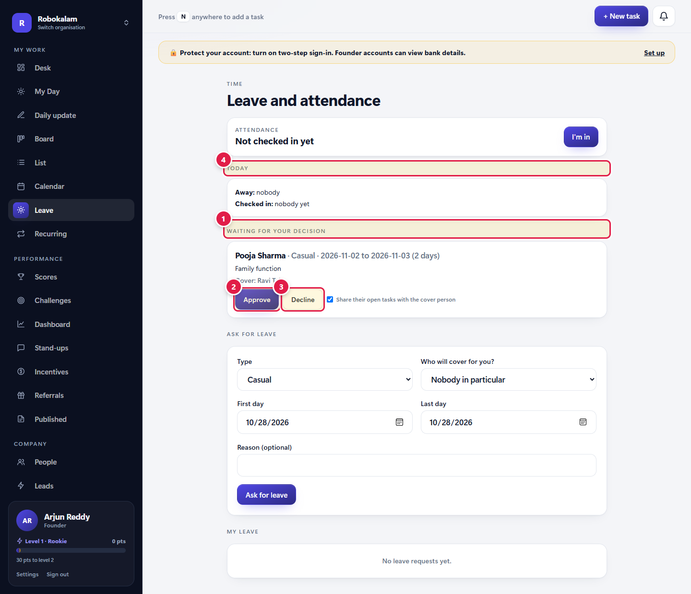
Waiting for your decision. Each request shows dates, reason and the cover person.
Approve. You can choose to hand over open tasks to the cover person in one click.
Decline. Add a short note. The person sees it.
Today. Who is away or checked in today.
36
Incentives: rules and monthly awards
FoundersAbout 3 min
Set the rules once, then review awards on the 1st of each month. Nothing is paid without your approval.
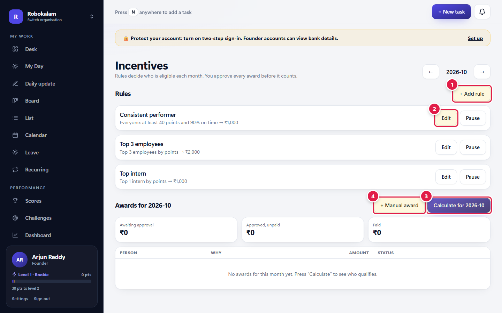
+ Add rule. Choose *Threshold* (points and on-time %) or *Top N* (reward the top few), who it applies to and the amount.
Edit or pause a rule.
Calculate for this month. Works out who qualifies. Review each award, approve or reject, then mark it paid.
+ Manual award. Reward something special, with a reason.
37
Scoring weights
FoundersAbout 2 min
On the Scores page, founders see a Scoring settings button (also under Settings → Scoring weights). There they can tune how points are worked out: points per priority, difficulty multipliers, late penalties, the initiative bonus, and the missed-recurring and overdue penalties.
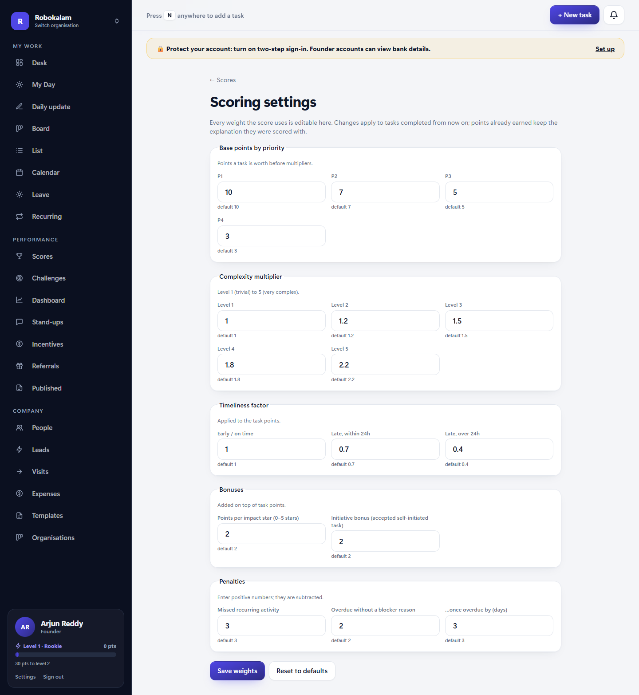
Part 7
For group owners: several organisations
Running Robokalam, Samaritan Stand-Up, Calvings, Nextpreneur and more from one place, with each one completely separate.
38
Switch between organisations
Group ownersAbout 1 min
Group owners see an organisation switcher at the top of the left menu. Everyone else sees only their own organisation's name.
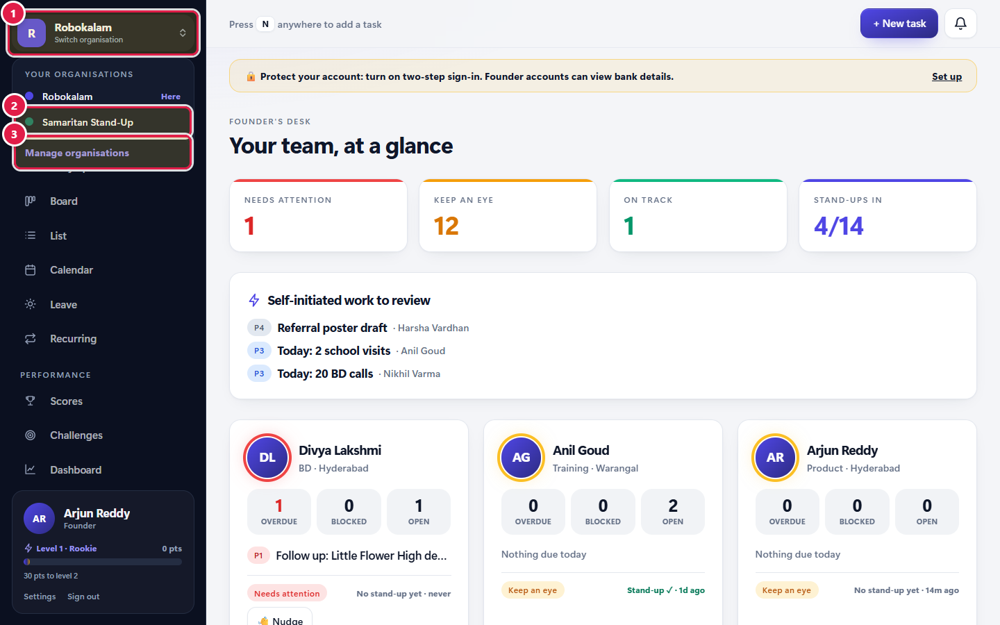
The switcher. Shows where you are. Click it.
An organisation. Click to move there. The whole screen changes to that organisation's people, tasks and colour.
Manage organisations. Opens the control page.
39
Organisations: create, colour and manage
Group ownersAbout 3 min
Open Organisations in the menu. Each organisation has its own card, with its own dashboard.
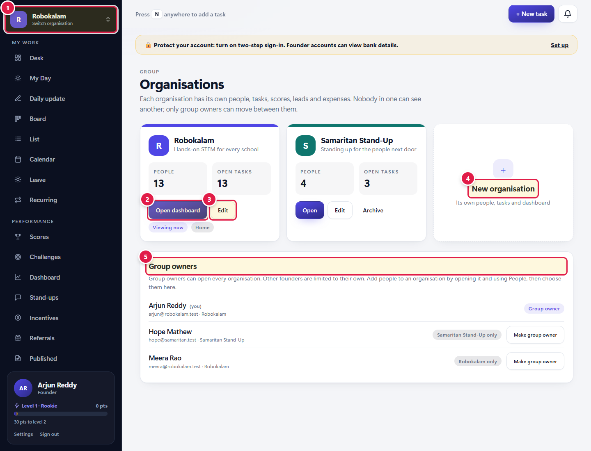
Your organisation is marked *Viewing now*. *Home* is the one you belong to.
Open dashboard / Open. Jump into that organisation's Desk.
Edit. Rename it, change its one-line description, or pick its brand colour. The app repaints in that colour whenever you are inside it.
New organisation. Start another one.
Group owners. Choose which other founders may open every organisation.
40
Start a new organisation
Group ownersAbout 3 min
Adding Calvings, Nextpreneur or anyone else takes about a minute.
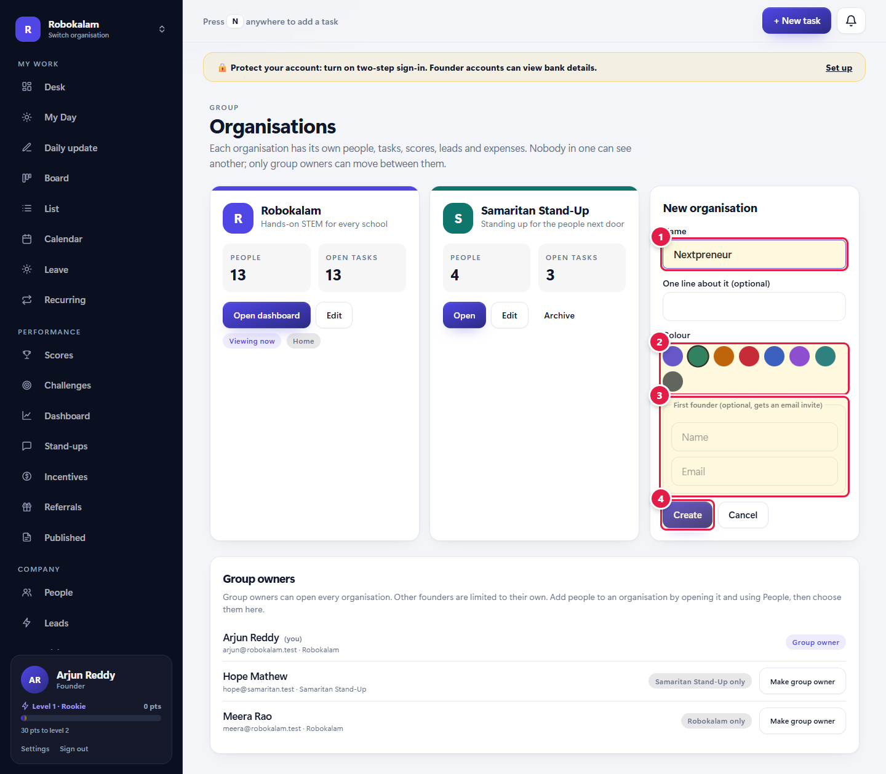
Name. For example *Calvings*.
Colour. Pick the brand colour. All options keep text readable.
First founder. Optional but recommended. Enter their name and email, and they receive an invitation. They will only ever see this organisation.
Create. Then open the organisation, add its departments and people just as you did for the first one.
Part 8
Onboarding plan and starter tasks
Hand these out. Tick the boxes on paper, or create the starter tasks in KalamDesk so they appear on each person's My Day.
A
New employee: first month
Day 1
Accept the invitation and choose a password
Read and accept the privacy notice
Tap I'm in on My Day
Open every item in the left menu once, to see what is there
Add your birthday and WhatsApp number in Settings (optional)
File your first stand-up before you leave
Add one task of your own with + New task
Week 1
File a stand-up every working day (aim for a 5-day streak)
Finish at least 3 tasks on time and mark them Done
Add a checklist and a comment to one task
Attach one file to a task
Send one kudos to a teammate
Read how points are calculated on Scores
Download your calendar link into your phone calendar
Month 1
Log your leads, visits or expenses in KalamDesk instead of on paper
Ask for leave using the Leave page, naming a cover person
Check your level, badges and rank. Pick one thing to improve
Turn on two-step sign-in (founders: required)
Give your manager one suggestion to improve KalamDesk
B
New intern: the internship
Day 1
Accept the invitation and choose a password
Read and accept the privacy notice
Tap I'm in on My Day
Meet your manager and find them under People
Add one task of your own so you have something to work on
File your first stand-up before you leave
Week 1
File a stand-up every working day
Finish your first task and look at the points it earned
Ask your manager for feedback via a task comment
Open Scores → Interns to see how interns are ranked
Send kudos to someone who helped you
Final month
Check your internship end date with your manager
Upload any pending expense claims with receipts
Ask for a reference or feedback note while your work history is fresh
Download your data from Settings if you want a record of your work
C
For the founder or manager: onboarding someone
Before they start
Go to People → + Add person and fill in name, official email, role, department, office and manager
For interns, set the start and end dates
Click Add person and send invite
Add their tasks for week 1 (or use the checklist below) so My Day is not empty
Tell them to look for the *Welcome to KalamDesk* email and check spam
Day 1
Check they appear on the Desk and have tapped I'm in
Assign a first small task with a clear deadline
Show them the stand-up page
For founders and managers: ask them to turn on two-step sign-in
End of week 1
Read their stand-ups and the tasks they finished
Send kudos for something genuine
Approve any self-initiated work they added
Ask what was confusing, and fix it for the next person
D
Starter tasks to assign
Copy these into KalamDesk (use + New task or a template) and assign them to every new joiner.
Task title
Description
Priority
Due
Complete KalamDesk onboarding
Set your password, accept the privacy notice, tap I'm in, add your birthday (optional).
P2
Day 1
File your first stand-up
Open Daily update and tell the team what you did today.
P2
Day 1
Tour of KalamDesk
Open every menu item once. Make a note of anything unclear and send it to your manager.
P3
Day 2
Finish three tasks on time
Use My Day to plan them, mark them Done on time.
P2
Week 1
Use checklists and comments
Add a checklist and one comment with an @mention on a real task.
P3
Week 1
Log your first lead / visit / expense
Whichever applies to your role. Use KalamDesk, not paper.
P3
Week 2
Ask for a day of leave (practice)
Open Leave and see how a request looks, then cancel it if you do not need it.
P4
Week 2
Share one improvement idea
Tell your manager one thing KalamDesk should do better.
P4
Month 1
Part 9
Questions and quick reference
Quick answers, and the things worth remembering.
?
Common questions
I forgot my password.
On the sign-in page click Forgot password?, enter your email and use the link we send. It works once and lasts 1 hour.
I never got the invitation email.
Check your spam folder first. Then ask a founder to open your profile and send a new invitation.
I cannot see a menu item a colleague has.
Menus depend on your role. Leads see Desk, Recurring, Dashboard, Stand-ups and Templates. Only founders see Departments, bank details and approvals, and only group owners see Organisations.
Why can't I see colleagues from the other organisation?
Each organisation is completely separate by design. Nobody in one can see the people, tasks or data of another.
My task is late because I am waiting for someone.
Set the status to Blocked and write the reason. The person who assigned it is told, and you avoid the overdue penalty.
I finished a task but it will not close.
It may need proof. Add the note or file it asks for. Or it may be waiting in In Review for a manager to approve.
I changed my mind about a leave request or expense.
Cancel leave on the Leave page, and withdraw an expense claim on the Expenses page, until it has been decided.
Are my bank details safe?
They are encrypted, and only founders can open them. Every reveal asks for a password check and is logged.
Can I use KalamDesk on my phone?
Yes. Open the same address in your phone's browser. The menu becomes a bar along the bottom, and you can add the page to your home screen.
What does a red dot on the bell mean?
A new notification: a task assigned to you, a comment, a reminder or kudos.
I turned on two-step sign-in and lost my phone.
Use one of your recovery codes instead of the 6-digit code. If you have none, another founder can switch it off for you.
✓
Quick reference
Priorities
P1
Urgent. Do it now.
P2
High. Today.
P3
Normal. The default.
P4
When you are free.
Task statuses
To Do
Not started.
In Progress
You are on it.
Blocked
Stuck. A reason is required.
In Review
Waiting for approval.
Done
Finished.
Who can do what
Intern / Employee
Their own tasks, stand-ups, leave, leads, expenses, scores and kudos. A names-only People directory (no contact details). They can add any teammate to a task as a request.
Manager
Everything above, plus assign work to the team, review, approve leave, Desk, Dashboard.
Founder
Everything in the organisation, including people, departments, bank details, expenses and incentives.
Group owner
A founder who can switch between organisations.
Handy shortcuts
N
Add a task from anywhere.
Enter
Save in the quick-add box.
Esc
Close a pop-up or menu.
WhatsApp replies (if turned on)
DONE a1b2c3
Finish a task. The code is in each alert.
START a1b2c3
Mark it in progress.
BLOCKED a1b2c3 reason
Mark it blocked.
UPDATE …
File your stand-up.
TASKS
See what is due.
KalamDesk · If something here does not match what you see, tell your founder so the guide can be fixed.